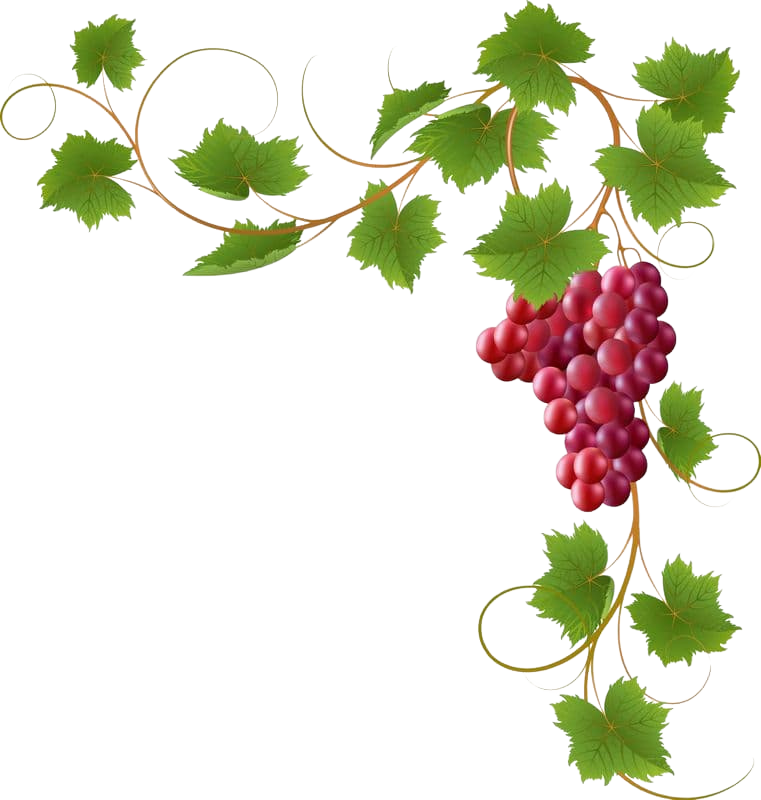

<div class="container-wrapper">
  <div class="container">
    <div class="masthead">
      <div class="site-logo-box">
        
      </div>
      <h1 class="site-title">Peasant Kitchen</h1>
      <div class="grape-masthead-container">
        
      </div>
      <button *ngIf="showBackButton" class="top-back-button" mat-raised-button color="warn" (click)="goBackToRecipes()">
        <mat-icon>arrow_back</mat-icon>
        Back
      </button>
    </div>
    <div class="content patriotic-theme">
      <div class="router-outlet-wrapper">
        <router-outlet></router-outlet>
      </div>
    </div>
  </div>
</div>
